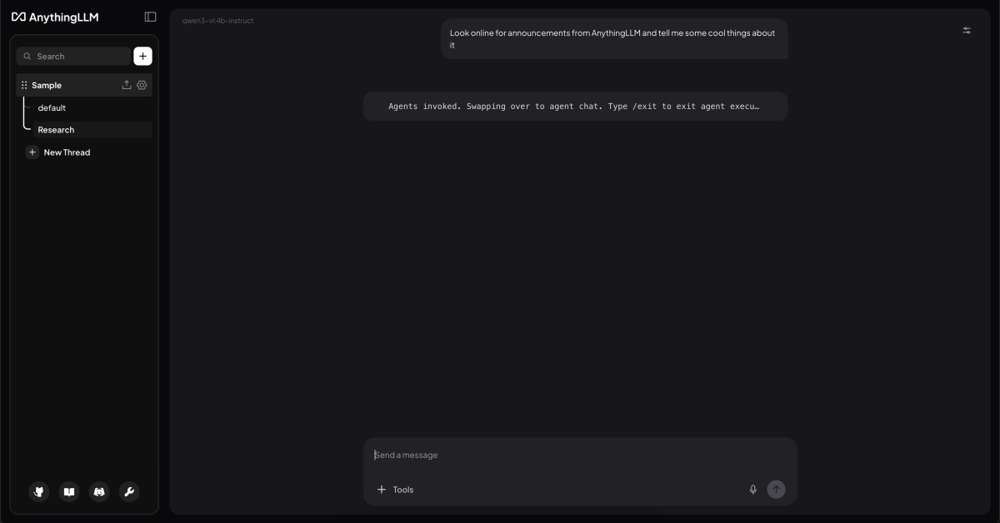

Large language models are no longer limited to simple chat boxes. Developers, researchers, and small teams increasingly need interfaces that can connect to local models, work with private documents, support Retrieval-Augmented Generation, manage multiple workspaces, and provide a usable layer above raw model APIs.
AnythingLLM is one of the most practical open-source projects in this category. It is not only a chatbot frontend, but a complete AI workspace for local and cloud-based LLM workflows. The official repository describes it as an all-in-one AI application for chatting with documents, using AI agents, configuring multi-user environments, and running with minimal setup.
AnythingLLM is an open-source AI interface developed by Mintplex Labs. Its main goal is to help users build a private, ChatGPT-like environment that can connect to different local or cloud LLM providers, ingest documents, use vector databases, and provide a clean user interface for real-world AI workflows.
The project is especially useful because it brings together several components that are often handled separately:
In other words, AnythingLLM is not just a wrapper around an API. It is closer to a full application layer for working with LLMs.
Running a local model is only one part of the problem. After installing Ollama, LM Studio, llama.cpp, or another local inference backend, users still need a convenient way to interact with the model, manage prompts, upload files, build document-based search, and test realistic workflows.
AnythingLLM fills this gap. It gives local LLMs a practical UI and makes them easier to use in day-to-day tasks. The official repository highlights support for open-source llama.cpp-compatible models, Ollama, LM Studio, LocalAI, KoboldCPP, Text Generation Web UI, and other local or self-hosted model providers. It also supports commercial and hosted providers such as OpenAI, Azure OpenAI, AWS Bedrock, Anthropic, Google Gemini, Mistral, Groq, Cohere, OpenRouter, DeepSeek, and others.
This makes AnythingLLM useful for both sides of the LLM ecosystem: users who want a private local setup and users who want to combine local models with cloud models.
AnythingLLM Desktop is designed for users who want a one-click local application. According to the official documentation, the Desktop version can be installed on Windows, macOS, or Linux and provides local LLMs, RAG, and agents with little configuration.
This version is best when the user does not need multi-user support or public deployment. It is a good choice for:
For developers working with local models, this is especially useful. Instead of building a custom UI from scratch, they can connect a local backend and immediately test how the model behaves in a realistic chat and document-search environment.
AnythingLLM also provides a Docker version for self-hosted deployment. The official Docker documentation describes it as a single-user or multi-user application that can be installed on a web server and used with local LLMs, RAG, and agents.
The Docker version is better suited for:
In this setup, users can create workspaces, manage access, and use the interface from any browser.
The documentation clearly separates the use cases: Desktop is easier for local personal usage, while Docker is intended for server-based, multi-user, and browser-accessible workflows. Docker also supports features such as multi-user access, embeddable chat widgets, password protection, user management, workspace access management, and white-labeling.
One of the strongest features of AnythingLLM is document-based chat. Users can upload files, index them, and ask questions over their content. This turns the LLM interface into a private knowledge assistant.
The official repository mentions support for multiple document types, including PDF, TXT, DOCX, and others. It also highlights drag-and-drop uploads and source citations in the chat UI.
This is important because many local LLM workflows are not only about “chatting with a model.” They are about connecting the model to useful context:
In a typical RAG workflow, AnythingLLM splits documents into chunks, embeds them, stores them in a vector database, retrieves relevant parts during a query, and passes that context to the LLM. This allows the model to answer questions using user-provided material instead of relying only on its training data.
AnythingLLM also includes AI agent functionality. The official feature list includes AI Agents, API access, chat modes, embedded chat widgets, event logs, LLM configuration, embedding models, vector databases, security, privacy, cloud deployment, and system prompt variables.
Agents make the interface more powerful than a standard chatbot. Instead of only generating text, the system can use tools and perform more structured tasks depending on configuration. The official repository also mentions agents inside workspaces, web browsing, custom AI agents, a no-code AI agent builder, and MCP compatibility.
This makes AnythingLLM useful for more advanced workflows, such as:
For users interested in agentic AI, AnythingLLM provides a practical UI layer without requiring them to build the whole agent system manually.
Support for Many LLM Providers
A major advantage of AnythingLLM is that it is not locked to one model provider. This is important because the LLM ecosystem changes quickly. A user may want to test OpenAI today, Ollama tomorrow, and a self-hosted model later.
The official repository lists support for many providers, including open-source llama.cpp-compatible models, OpenAI, Azure OpenAI, AWS Bedrock, Anthropic, Google Gemini, Hugging Face, Ollama, LM Studio, LocalAI, Together AI, Fireworks AI, Perplexity, OpenRouter, DeepSeek, Mistral, Groq, Cohere, KoboldCPP, LiteLLM, Text Generation Web UI, xAI, and others.
This flexibility is useful for:
For example, a developer can use Ollama for local testing, OpenRouter for comparing hosted models, and a private Docker deployment for team usage.
AnythingLLM also supports vector databases and embedding models. This matters because RAG depends heavily on the embedding and retrieval layer, not only on the LLM itself.
In simple terms:
The LLM generates the answer.
The embedding model converts documents into searchable vectors.
The vector database stores and retrieves relevant chunks.
AnythingLLM provides a UI-based way to configure these parts, making RAG more accessible for users who do not want to build a full retrieval pipeline from scratch.
For developers, this is useful because it allows faster experimentation. You can test different models, document chunking strategies, embedding providers, and retrieval behavior before deciding whether to build a custom pipeline.
AnythingLLM is also useful beyond the UI. The official repository lists a full Developer API for custom integrations.
This means the project can be used as part of a larger application architecture. A team can use AnythingLLM as:
This is important because many businesses do not want AI to exist only as a separate app. They want to connect it to existing workflows, websites, internal dashboards, and knowledge systems.
The choice depends on the use case.
Use AnythingLLM Desktop when you want a simple personal setup. It is best for one user, local files, private documents, local model testing, and fast experimentation. The official documentation describes Desktop as the easiest way to get started.
Use AnythingLLM Docker when you need a server-based system. It is better for teams, user accounts, shared workspaces, permissions, website widgets, browser access, and self-hosted deployment.
A practical summary:
Desktop = personal local AI workspace.
Docker = self-hosted AI workspace for teams or production-style usage.
There are many open-source interfaces for LLMs: Open WebUI, LibreChat, Text Generation Web UI, llama.cpp server UIs, Gradio demos, and custom dashboards.
AnythingLLM stands out because it focuses on an all-in-one workflow. It is not only a chat interface. It combines UI, RAG, agents, documents, model providers, vector databases, permissions, widgets, and API access.
This makes it especially strong for users who want to move quickly from “I have a model” to “I have a usable AI workspace.”
It may not be the best choice for users who want to manually control every part of the pipeline in Python. For deep research, a custom LangChain, LlamaIndex, Haystack, or pure PyTorch/Python stack may offer more flexibility. But for practical usage, AnythingLLM dramatically reduces setup time.
AnythingLLM can be used in several realistic scenarios.
A developer can connect Ollama or LM Studio and use AnythingLLM as a local chat interface for testing open-source models.
A researcher can upload PDFs, notes, and papers, then ask questions across the indexed material.
A small company can deploy the Docker version and create internal workspaces for documentation, policies, support articles, and technical manuals.
A website owner can use the Docker version to create an embedded AI chat widget.
A team working with small language models can use AnythingLLM as a practical interface for testing how compact models behave in real workflows.
A solo user can use the Desktop version as a private document assistant without needing to build a RAG pipeline manually.
AnythingLLM is one of the strongest open-source UI projects for local LLM workflows. It combines chat, local model support, document ingestion, RAG, agents, vector databases, multi-user deployment, and API access in one application.
Its main strength is that it turns local and self-hosted LLM usage into a practical product-like experience. Instead of forcing users to assemble every component manually, it provides a ready interface where models, documents, retrieval, agents, and workspaces can work together.
For developers, it is a fast way to test local models and RAG behavior. For teams, it can become a private AI workspace. For website owners, it can provide an embeddable AI assistant. For users experimenting with open-source LLMs, it offers a clean bridge between raw inference backends and real productivity workflows.
In the open-source LLM interface ecosystem, AnythingLLM stands out because it is not just a UI. It is a complete local-first AI workspace.
GitHub Link: https://github.com/Mintplex-Labs/anything-llm